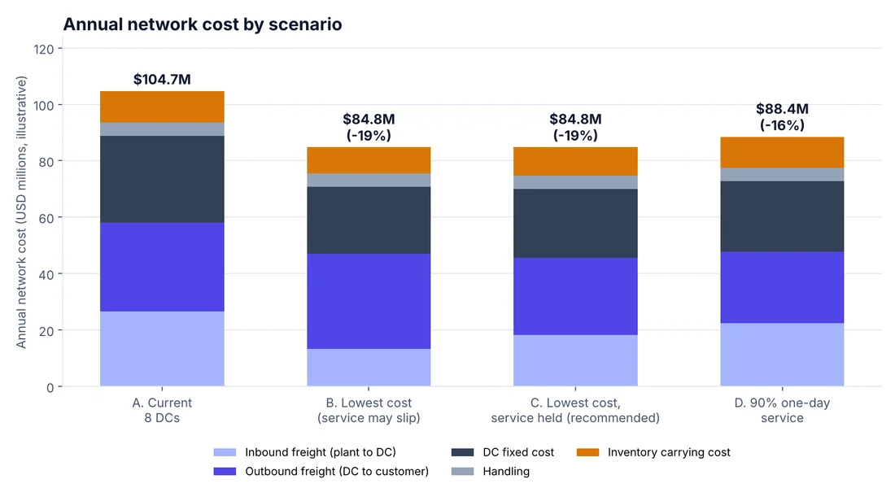
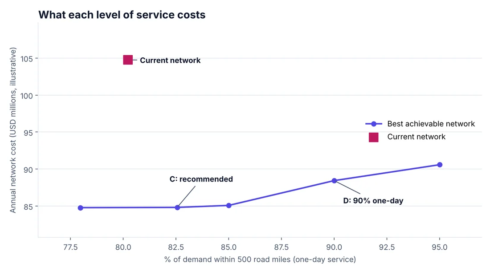

Projects
Caden Fortenberry's Supply Chain Analytics Projects
Hands-on case studies by Caden Fortenberry, built with public data so the full method and code can be shared openly.
Case study
Redesigning a Distribution Network
A manufacturer with four plants and an eight-DC legacy network asks whether to keep it or redesign it. I built an optimization model to find the lowest-cost network that doesn't hurt customer service.
The company, plants, costs and volumes are fictional and illustrative. Customer locations and population come from public 2020 U.S. Census data.
The problem
Real network decisions are trade-offs. More distribution centers (DCs) shorten the last mile and speed up delivery, but add fixed cost, spread inventory thinner and complicate inbound freight from the plants. The question: what is the cheapest network that still serves customers at least as well as today?
The approach
- Network: 4 plants supply DCs, which supply customers in the 59 largest continental U.S. cities, with capacity limits at every plant and DC.
- Decisions: which DC sites to open, at what size (small or large, with economies of scale), and how freight flows from plants to DCs to customers.
- Costs: inbound and outbound freight, DC fixed cost, handling, and inventory carrying cost that grows with the square root of throughput, which captures the safety stock benefit of consolidating sites.
- Service: a constraint on the share of demand within one-day delivery range (500 road miles).
- Scenarios: the current network, lowest cost, lowest cost with today's service held, and a 90% one-day service target.
What the model found
| Scenario | DCs | Annual cost | vs. current | One-day coverage |
|---|---|---|---|---|
| A. Current network | 8 | $104.7M | n/a | 80.2% |
| B. Lowest cost, service may slip | 5 | $84.8M | -19% | 78.0% |
| C. Lowest cost, service held (recommended) | 6 | $84.8M | -19% | 82.6% |
| D. 90% one-day service | 7 | $88.4M | -16% | 90.0% |
- Where the saving comes from: fixed DC cost falls from $30.8M to $24.4M, inbound freight from $26.7M to $18.2M, outbound freight from $31.4M to $27.4M and inventory cost from $11.2M to $10.1M.
- Plant-attached DCs win: placing DCs in the same cities as plants removes inbound transfer freight for local volume, and the model chose this for most of the network.
- Holding service is nearly free: scenarios B and C cost the same to the nearest $0.1M, so there is no reason to let service slip. Raising one-day coverage to 90% costs about $3.6M more per year, and 95% about $5.8M more.
- The transition: close six sites (Columbus, Dallas, Denver, Philadelphia, Phoenix, Seattle), resize Atlanta, keep Los Angeles, and open four (New York, Fort Worth, Indianapolis, Sacramento).
- Robust to cost assumptions: with DC fixed costs from 25% lower to 50% higher, the saving stays near 19% and the best network is five or six DCs.


Tools and next steps
Tools: Python (NumPy, pandas, SciPy mixed-integer solver) for the model and Matplotlib for the charts. The full code, data and results are open on GitHub.
Limitations and next steps: cities stand in for metro areas, and one-time transition costs such as lease exits and build-out are not included. A production study would use order history by ZIP3, lane-level rates, single-sourcing rules and demand variability, and would calculate payback on the transition cost.